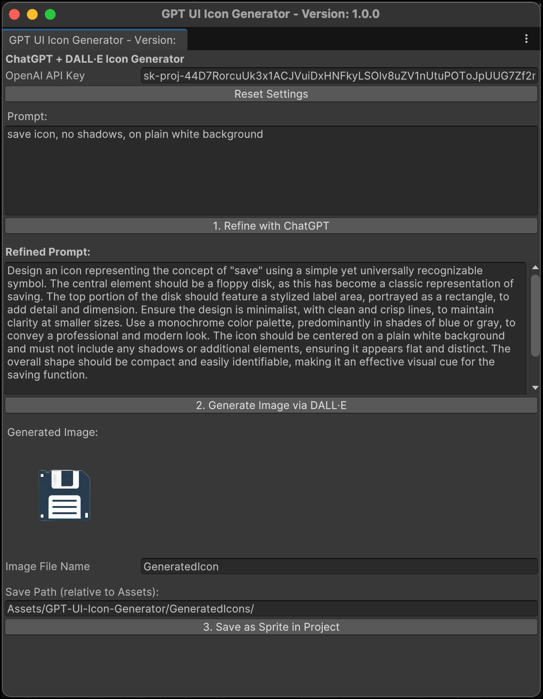

A Unity Editor tool to generate clean UI icons using ChatGPT + DALL·E
This tool refines icon prompts using ChatGPT and generates beautiful, white-background UI icons using OpenAI's DALL·E. It also removes backgrounds automatically with rembg, saving you clean Unity Sprites in one click.
Email: hlushko.a.n@gmail.com